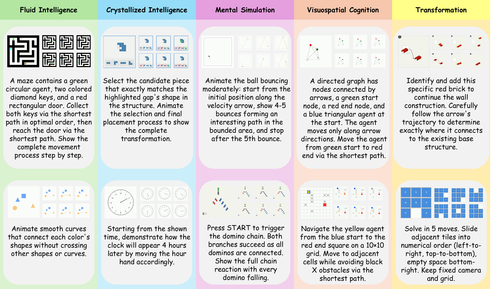
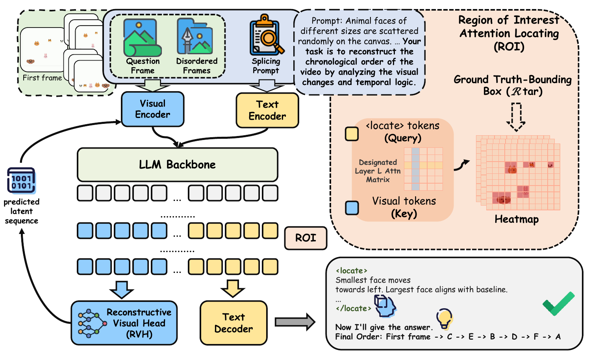
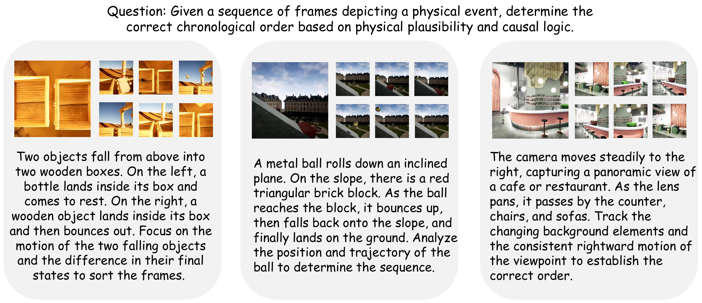
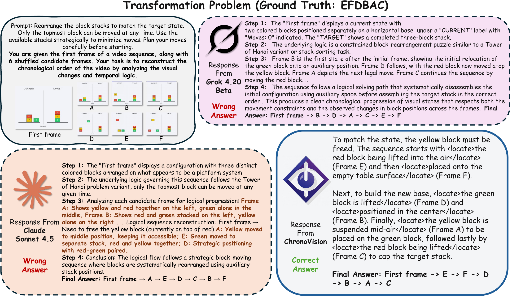

ChronoVision: Temporal Reasoning via Latent State Reconstruction
Abstract
Multimodal large language models excel at passive perception but struggle with complex visual cognitive tasks requiring multi-step temporal reasoning. This degradation largely stems from the ambiguity of language-based reasoning, which often fails to accurately articulate continuous visual transformations. To address this, we propose ChronoVision, a multimodal framework designed to align visual logic with latent imagery. During supervised fine-tuning, a Reconstructive Visual Head predicts the latent representation of the final transformed state, while an ROI Attention Locating module focuses the model on key visual evidence. In post-training, reinforcement learning with implicit process grounding jointly rewards outcome correctness, latent process alignment, and visual focus.
We further introduce Vbvr-VQA, which evaluates temporal tracking by reformulating video reasoning as a strict image-ordering task. ChronoVision achieves state-of-the-art performance with 73.2% in-domain overall exact-match accuracy and 71.6% out-of-domain accuracy, alongside 55.0% accuracy on IntPhys2.
✅ Contributions
- Vbvr-VQA. We formulate temporal reasoning as exact chronological ordering of six shuffled visual states, reducing linguistic shortcuts.
- ChronoVision. A Reconstructive Visual Head predicts the final latent visual state, while ROI Attention Locating grounds reasoning in dynamic regions.
- Implicit process grounding. Reinforcement learning combines outcome, latent alignment, and visual focus rewards to reduce long-horizon reasoning errors.
🧾 Vbvr-VQA Dataset and Benchmark
Given an initial frame and six shuffled candidate images, Vbvr-VQA requires the model to recover the exact chronological sequence. The benchmark covers fluid intelligence, crystallized intelligence, visuospatial cognition, mental simulation, and transformation tasks.

⚙️ Method Overview
ChronoVision contains three components: a Reconstructive Visual Head for latent final-state prediction, an ROI Attention Locating module for fine-grained visual grounding, and a GRPO post-training stage with implicit process rewards.

📊 Experiment Results
ChronoVision reaches 73.2% in-domain and 71.6% out-of-domain exact-match accuracy on Vbvr-VQA, outperforming the strongest compared proprietary baseline by 17.4 points in-domain.
| Model | In-Domain | Out-of-Domain |
|---|---|---|
| Qwen 3.5 397B | 49.4 | 53.2 |
| Claude Opus 4.6 | 55.8 | 60.8 |
| ChronoVision 9B | 73.2 | 71.6 |
Out-of-Domain Physical Reasoning
On IntPhys2, ChronoVision achieves 55.0% overall accuracy, a 6.5-point improvement over the Qwen 3.5 9B backbone. The model generalizes from abstract temporal tasks to gravity, collision, momentum, and camera-motion scenarios.

🔍 Qualitative Example
In a constrained block transformation problem, language-first baselines produce plausible descriptions but choose an invalid order. ChronoVision grounds each step in the changing visual regions and reconstructs the correct sequence.

BibTeX
@misc{shen2026decodingchildrensgaitbehavior,
title={Decoding Children's Gait Behavior},
author={Yifan Shen and Boyi Li and Meihuan Huang and Yuanzhe Liu and Xu Cao and Jinyang Jin and Zhengyuan Li and Anglin Liu and Junho Kim and Jingyuan Zhu and Lan Fangzhou and Jianguo Cao and Jintai Chen and Ismini Lourentzou and James Matthew Rehg},
year={2026},
eprint={2608.00371},
archivePrefix={arXiv},
primaryClass={cs.CV},
url={https://arxiv.org/abs/2608.00371}
}